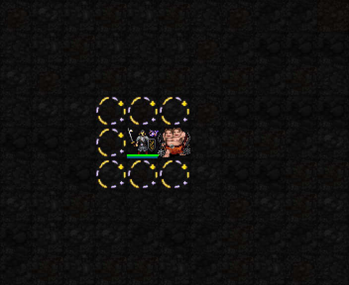

현재 검토 대상: 기존 구현과 이펙트. 마법사 중심 개편은 방향만 합의했고 세부 수치·책 선물·MP 회복은 아직 추가하지 않았습니다.

| 항목 | 내용 |
|---|---|
| 해금 / 기도술 조건 | 신앙30(1성) / 최소 기도술 제한 없음 |
| 비용 | MP3 · 추가 신앙 소모0 · 행동1턴 |
| 범위 | 자신 주변8칸. 이동을 따라오는 고리, 자신·아군 피해 없음 |
| 지속 | 10+0.4I턴. 기도술12에서14.8턴 |
| 피해 | 매1턴마다 범위 안 보이는 적 모두 1d(4+⌊I/3⌋) 물리 피해. I12:1d8, 평균4.5(AC 적용 전) |
| 첫 피해 / 재시전 | 시전 완료1턴 뒤 첫 피해. 재시전은 지속 갱신만 하며 즉시 추가 피해 없음 |
| 고리 그림 | 주변8칸에 표시되는 범위 효과. 소환수나 투사체가 아니며 그림 회전 횟수와 피해 횟수는 무관 |
이 GIF는 기존 night-vfx04의 실제 SDL 고정 전투장 캡처 두 프레임입니다. 새로 촬영한 전투 영상이나 피해 전 과정 영상은 아닙니다. 현재 캐스터 개편 효과를 보여주는 이미지도 아닙니다.
다음 검토: 기존 인접 고리를 유지할지, 마법사 자원·학습 보조와 어떻게 연결할지 결정. 아직 수치 변경 없음.